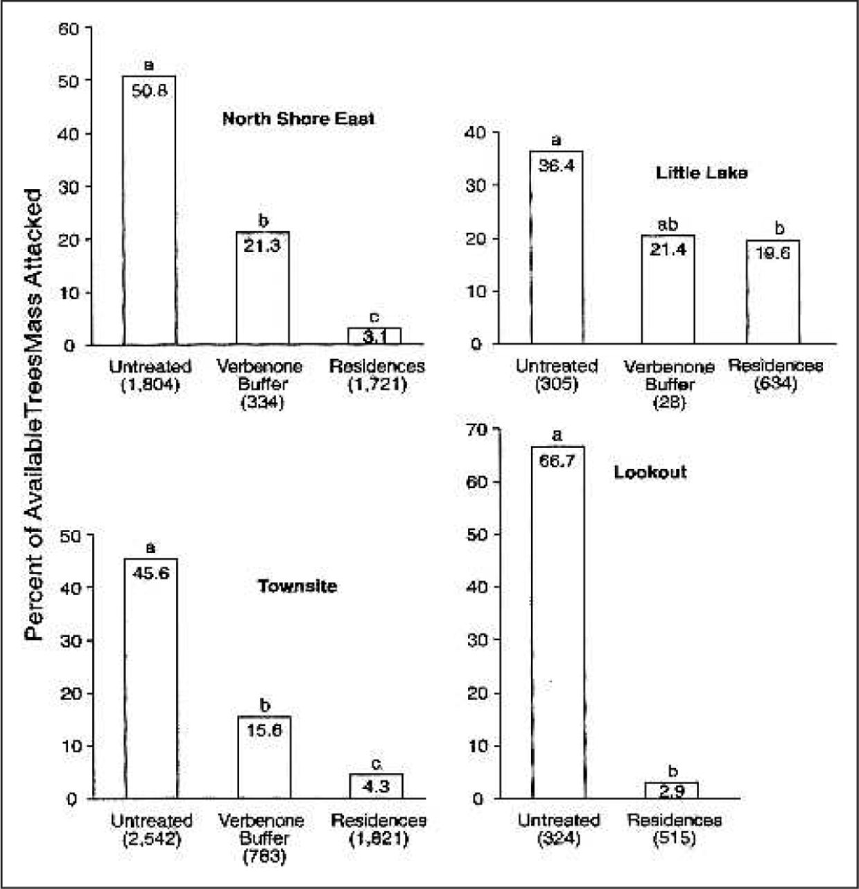
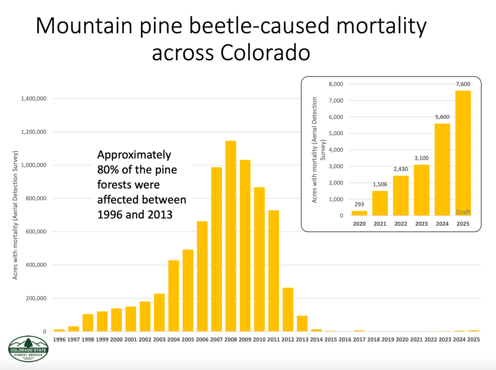

Individual Action
- Reduce emissions
- Do not move firewood
- CO2 calculation
A person can help by lowering the carbon emissions and not moving firewood. Driving less, saving electricity, and using less heating or air-conditioning can lower greenhouse gases, which helps slow warming.
If 50 people can save 1 gallon of gas per week, and 1 gall releases about 20 pounds of CO2
50x20=1000 pounds of CO2 per week
1000*52=52000 pounds of CO2 per year.
Obstacle: If 50 people can save 1 gallon of gas per week, and 1 gall releases about 20 pounds of CO2
Government Action
- Forest monitoring
- Early tree removal
- Drones and workers
The government should create a forest monitoring and early removal program. State and federal forest agencies could use aerial drones, and forest workers to find beetle infected trees early. Then they could remove or treat those trees before the beetles spread to nearby healthy trees.
Obstacle: One problem is that forests are very large, so it is hard to find every infected tree early. Some people may also oppose tree removal because they do not want forests changed, even though removing infected trees can help protect the rest of the forest.
Engineering Action
- Drones
- Satellite imaging
- Verbenone packets
A useful engineering solution would be drones and satellite imaging that detect sick trees early. This would help forest managers find beetle outbreaks before they spread.Another solution is verbenone packets, which use beetle chemical signals to repel mountain pine beetles. Verbenone works best when beetle populations are still low or moderate.
Obstacle: The one issue with Drones, and satellites is it costs money to operate. Verbenone is also not perfect because it works better before outbreaks become severe.
Quote 1
Verbenone is a synthetic pheromone treatment for high value pine trees that replicates the beetle pheromone, sending a message that the tree is full and that the food supply is insufficient for additional beetles.
This quote is important because it explains how Verbenone can help reduce mountain pine beetle attacks in a realistic way. Instead of killing beetles directly, the treatment confuses them and makes them avoid certain trees. This could help protect important forest, parks, and neighborhoods from further tree loss
https://www.forestrydistributing.com/verbenone-mountain-pine-southern-pine-ips-beetle-pheromone-repellent-pouches-flakes
Graph/Data Table #1

This graph shows that areas treated with verbenone had fewer trees attacked by the Pine Beetles compared to untreated areas. In the untreated forest, most trees were attacked, while treated areas had much lower attack rates. This proves that verbenone can help protect trees and reduce beetle damage one used early in an outbreak.
https://auf.isa-arbor.com/content/33/5/318
Graph/Data Table #2

This graph shows why mountain pine beetles are still a problem today. Even though the largest outbreak happened between 1996 and 2013, the graph on the right shows that beetle-caused tree mortality has been increasing again from 2020-2025. This means the beetles are continuing to damage forests instead of disappearing completely. Ongoing outbreaks can continue killing trees, increasing wildfire risk, and harming forest ecosystems.
https://boulderreportinglab.org/2026/02/15/mountain-pine-beetle-outbreak-intensifies-in-boulder-county-threatening-forests/